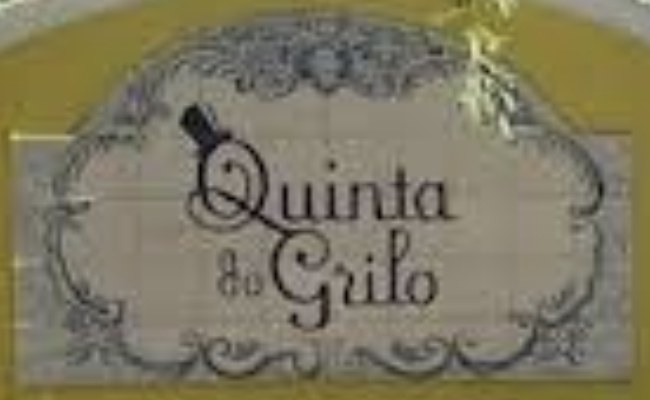
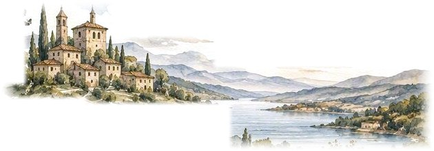

AThe plaque
The quinta's own sign, photographed by you, redrawn for your invitation.
Your photo(enlarged crop)

Redrawnvector, sharp at any size
Drawing itself inblue lines, then the tiles, then the lettering
BAzulejo details
1A tile band along the fold
Maya e Tomás
10 de julho
2Corner tiles on the open sheet
Maya e Tomás
10 de julho
3A tile lining, seen as the top lifts
Maya e Tomás
10 de julho
4The plaque closes the invitation
10 de julho · Milharado
5One tile under the seal
Toca para abrir
6A tile row where the scene ends

Quinta do Grilo · Milharado
CMonogram
Not used: you chose names only, no monogram. Kept here for the record.
1Ink line
2Azulejo blue
3With the olive sprig
DDate and place
1Classic
10 de julho
Quinta do Grilo, Milharado
2Script date
10 de julho
Quinta do Grilo · Milharado
3As on the sign
10 de julho
Quinta do Grilo
Milharado
Year, time and monogram: TODO(user).